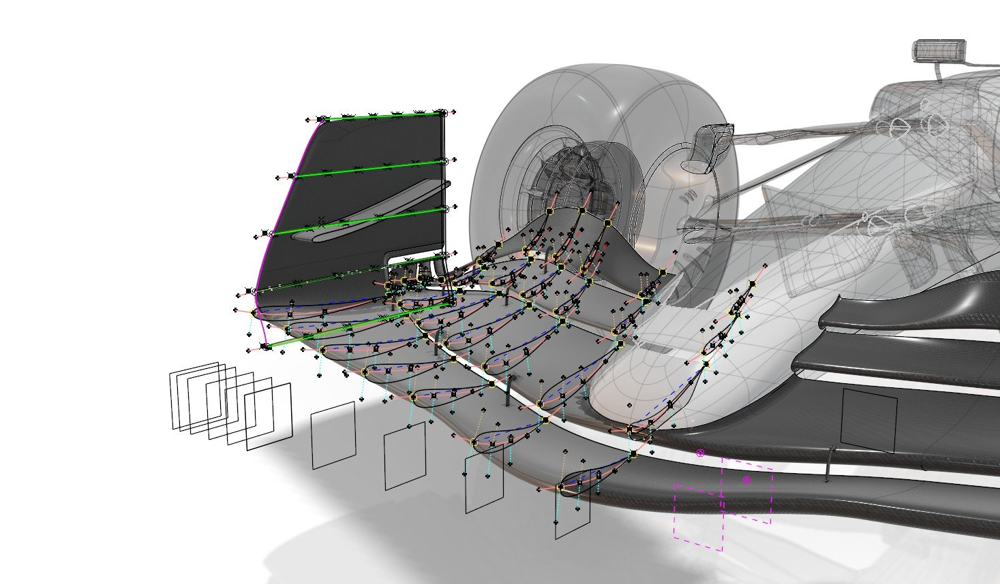
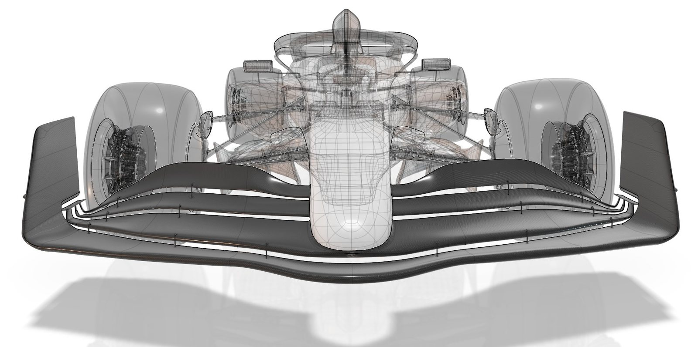
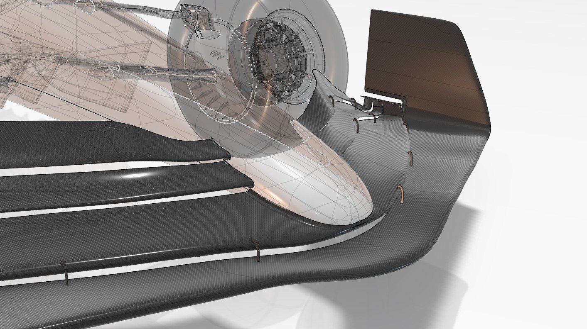
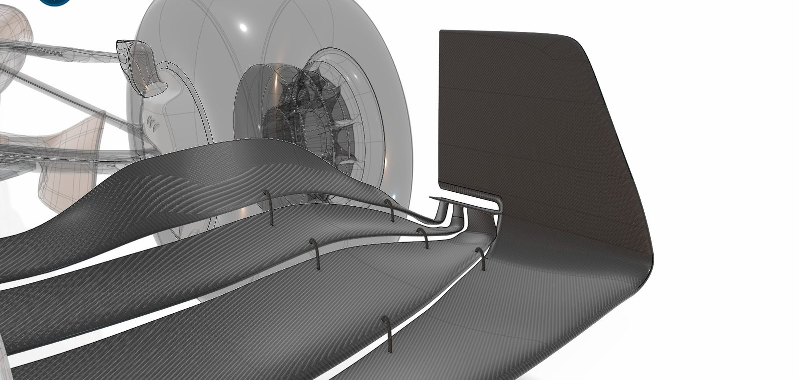

← All projects
Dassault Systèmes · F1 virtual twin · 2025
Front wing 2025
The current generation: flaps that blend into the nose and an endplate that rolls into the footplate, to manage the front-tyre wake instead of pushing it outboard.
- Role
- Design & surfacing
- Tools
- CATIA GSD+, modular design
- Year
- 2025

What I did
- Four-element wing with variable-chord flaps attached to the nose and a curved endplate.
- Same parts-and-functions breakdown as 2019, so both generations compare side by side.
- Built on a modular architecture, so endplate, flaps and fillets swap without remodeling.


Gallery





